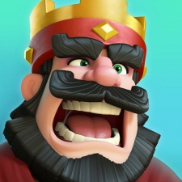

Hi, I'm Koyo Nakamura
Research, design, front-end development. While those three terms best describe my skillset, they do not fully define me. I hope this page serves as an introduction to my life outside of UX.
When I’m not working, I’m either playing games or enjoying the outdoors. I’ve gone on hiking trips in many different places, including here in Washington, Oregon, Hawaii, and Hong Kong.

My favorite games are Overwatch, Melee, Clash Royale, and Chess. I also like to make YouTube videos sometimes (I've been working on learning how to edit videos lately!).